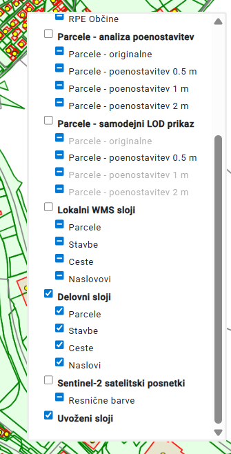
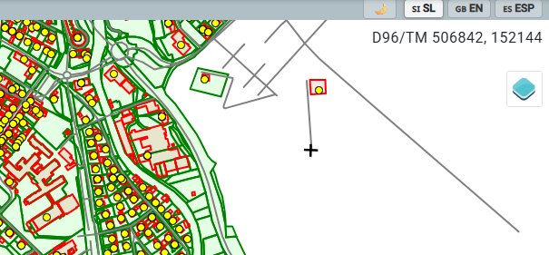
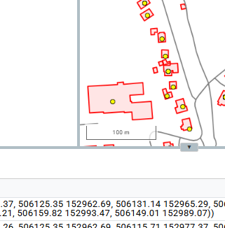
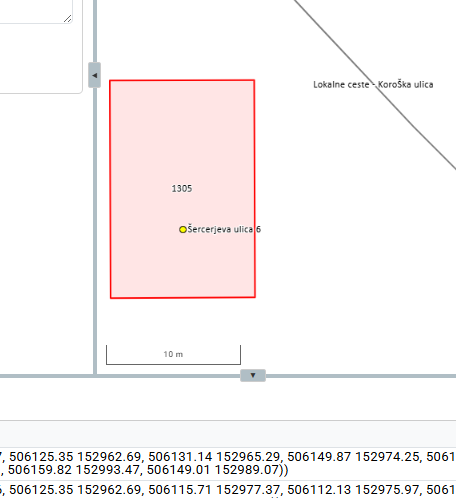
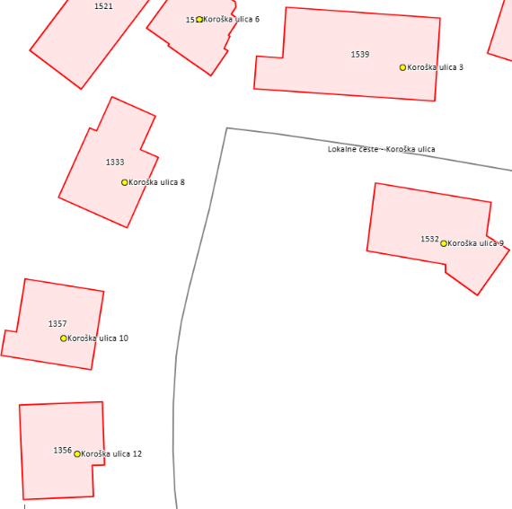
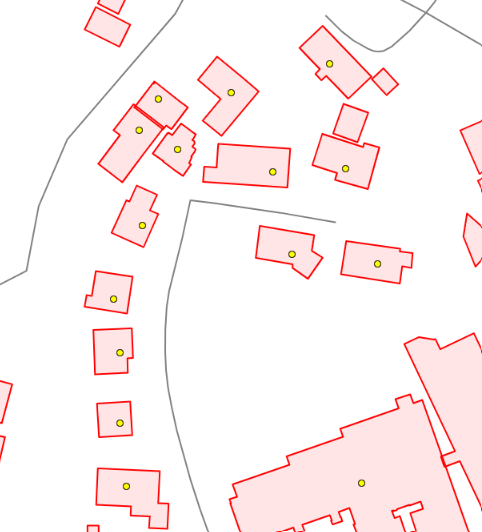
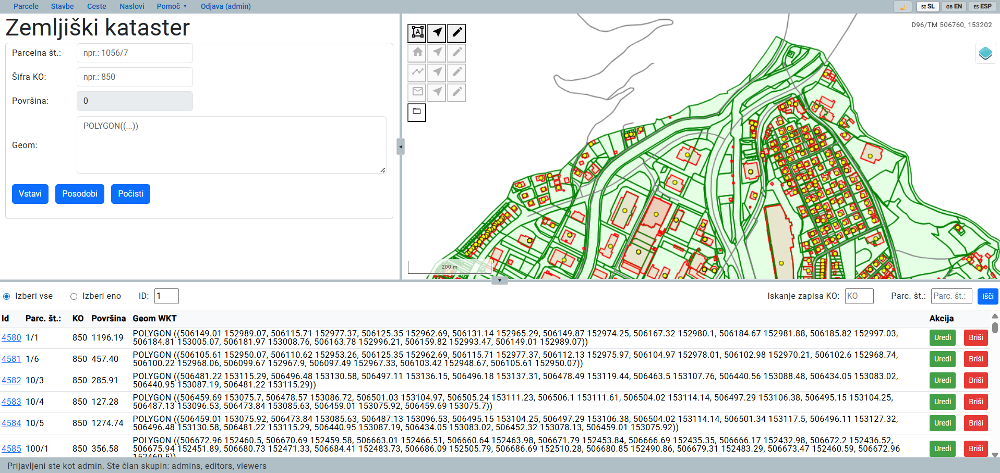
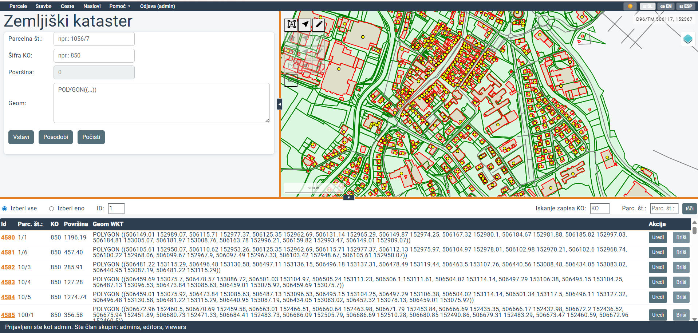

Welcome to the GeoSG Geoportal
The GeoSG Geoportal enables browsing, visualization and management of spatial data, such as cadastral parcels, buildings, roads and addresses.

Glavne funkcionalnosti geoportala so razdeljene v posamezne zavihke, ki so dostopni prek navigacijskega menija na vrhu strani. Izberite želeni zavihek in sledite navodilom za uporabo posamezne funkcionalnosti.
System Requirements for Using GeoSG Geoportal
- A modern web browser (Chrome, Firefox, Edge, Safari),
- Minimum screen resolution 1280 × 720 px,
- An active internet connection,
- A user account with appropriate access rights (for editing data).
Geoportal Usage Basics
Main Parts of the Geoportal User Interface
The geoportal user interface consists of five main parts:
Navigation Menu
The navigation menu allows switching between individual geoportal modules. Clicking the selected tab displays the corresponding table and form.
On the right side of the navigation menu you can change the geoportal language (SI, EN, ESP) and select the color theme. A dark mode and alternative theme are also available.
Data Entry and Editing Form
The form allows entry of new spatial objects with attribute data and editing of existing objects.
Map View
The interactive map enables data browsing, object selection and drawing and editing geometry.
Tabular Data View
The table displays a list of records and enables browsing, searching and selecting data.
Status Bar
The status bar displays the current state of the geoportal and its responses to user commands. See "Advanced Features" for details.
The vertical divider changes the width of the form and map view; the horizontal divider changes the height of the upper part and tabular view.

Layer Display
On the map view (top right), the "Layers" button manages spatial layer visibility.
Individual layers and groups can be toggled with checkboxes. Both the layer and its parent group must be selected for a layer to appear.
A detailed explanation of layers is available in the "Layer Management" tab.
Layer Editing
In the navigation tabs (Parcels, Buildings, Roads, Addresses), you can work with the respective spatial data types.
Buttons for adding, selecting and editing geometries are on the left of the map view, active based on the current tab.
Detailed function usage is presented per module in the following tabs. All modules work on the same principles.
Modules differ mainly in their attributes, presented at the start of each chapter.
Basic Map Interaction Elements
| Function | Description | Action |
|---|---|---|
| Zoom | Zoom in/out | Scroll the mouse wheel |
| Pan | Move the view across the map | Hold left mouse button and drag |
Parcel Attributes
- ID: Enoličen identifikator (generira baza)
- Parcel Number (Parc. No.): e.g. "1234"
- KO Code (KO): Cadastral municipality (e.g. "850")
- Area (Area): Parcel area (m²)
- Geometry (Geom WKT): Parcel polygon in WKT format
Working with Parcels
Displaying Parcel Data in the Table
Select the "Parcels" tab in the navigation menu
The table shows all parcels: ID, Parc. No., KO, Area, Geom WKT.
Izbira načina prikaza podatkov v tabeli
Nad tabelo sta na voljo dva izbirna gumba:
- Select All: Displays all parcels
- Select One: Displays only the parcel with a specific ID
Each parcel ID is a blue underlined link. Clicking it zooms the map to that parcel and temporarily hides others. The mode switches to Select One automatically. Switch back to Select All to show all parcels again.
Adding a New Parcel
Nariši geometrijo na karti
With the Parcels tab selected, click the icon
 for drawing a parcel.
Hover the cursor over the icon for the tooltip: "Start drawing parcel".
Click to place vertices; double-click to finish.
for drawing a parcel.
Hover the cursor over the icon for the tooltip: "Start drawing parcel".
Click to place vertices; double-click to finish.
Izpolni obrazec
WKT geometry transfers automatically to the "Geom" field. Fill in the mandatory fields:
- Parcel Number (parc_st): e.g. "1234/5"
- KO Code (sifko): e.g. "850"
Area is calculated automatically from geometry and cannot be changed.
Save the parcel
Click Insert. With appropriate permissions, the parcel is saved and appears in the table and vector layer.
Editing an Existing Parcel
Select the parcel
You can select the parcel in two ways: in the table by clicking
Uredi
ali neposredno na karti z orodjem
 "Select parcel".
"Select parcel".
The map zooms to the parcel, highlighted with a purple border. Its attributes and geometry are automatically loaded into the form. Click the same button again to deselect. Uredi.
Edit attributes or geometry
Attributes: Change values in the form (parcel number or KO code).
Geometry: Change coordinate points in the geometry record.
Editing geometry directly on the map:
Izberite ikono
 Edit parcel.
Drag the vertices to reshape the parcel.
When finished, click the icon
Edit parcel.
Drag the vertices to reshape the parcel.
When finished, click the icon
 to turn off the editing function.
The WKT updates in the form on the left.
to turn off the editing function.
The WKT updates in the form on the left.
Save changes
To update the geometry in the database, click: Update. Changes to the parcel are saved.
Deleting a Parcel
Find the parcel you want to delete in the table.
In the "Action" column (far right), click: Briši.
Confirm the deletion in the popup window.
Building Attributes
- ID: Enoličen identifikator (generira baza)
- KO Code (KO): Cadastral municipality (e.g. "850")
- Building Number (Bldg. No.): e.g. "1234"
- Building Description (Description): Short description
- Area (Area): Building footprint area (m²)
- Geometry (Geom WKT): Building polygon in WKT format
Working with Buildings
Displaying Building Data in the Table
Select the "Buildings" tab
The table shows all buildings: ID, Bldg. No., KO, Description, Area, Geom WKT.
Izbira načina prikaza podatkov v tabeli
Nad tabelo sta na voljo dva izbirna gumba:
- Select All: Displays all buildings
- Select One: Displays only the building with a specific ID
Each building ID is a blue underlined link. Clicking it zooms the map to that building and temporarily hides others. The mode switches to Select One automatically. Switch back to Select All to show all buildings again.
The table will scroll to the found building.
Adding a New Building
Nariši geometrijo na karti
With the Buildings tab selected, click the icon
 for drawing a building.
Hover the cursor over the icon for the tooltip: "Start drawing building".
Click to place vertices; double-click to finish.
for drawing a building.
Hover the cursor over the icon for the tooltip: "Start drawing building".
Click to place vertices; double-click to finish.
Izpolni obrazec
WKT geometry transfers automatically to the "Geom" field. Also fill in:
- Building Number: e.g. "1234"
- KO Code (sifko): e.g. "850"
- Building Description: e.g. "Residential house"
- Area (area): e.g. "180"
Save the building
Kliknite gumb Vstavi. With appropriate permissions, the building is saved to the database and appears in the table and vector layer.
Editing an Existing Building
Select the building
You can select the building in two ways: in the table by clicking
Uredi
ali neposredno na karti z orodjem
 "Select building".
"Select building".
The map zooms to the building, highlighted with a purple border. Its attributes and geometry are automatically loaded into the form. Click the same button again to deselect. Uredi.
Edit attributes or geometry
Attributes: Change values in the form (building number, KO code, description or area).
Editing geometry directly on the map:
Izberite ikono
 Edit building.
Drag vertices to reshape the building.
When finished, click the icon
Edit building.
Drag vertices to reshape the building.
When finished, click the icon
 to turn off the editing function.
The WKT is automatically updated in the form.
to turn off the editing function.
The WKT is automatically updated in the form.
Save changes
To update geometry or attributes in the database, click: Update. Changes to the building are saved.
Deleting a Building
Find the building you want to delete in the table.
In the "Action" column (far right), click: Briši.
Confirm the building deletion in the popup window.
Road Attributes
- ID: Enoličen identifikator (generira baza)
- Street Name: e.g. "Dunajska cesta"
- Manager: Road manager
- Maintainer: Who maintains the road
- Length: Road length in meters
- Geometry (Geom WKT): Road line in WKT format
Working with Roads
Displaying Road Data in the Table
Select the "Roads" tab
The table shows all roads: ID, Street Name, Manager, Maintainer, Length, Geom WKT.
Izbira načina prikaza podatkov v tabeli
Nad tabelo sta na voljo dva izbirna gumba:
- Select All: Displays all roads
- Select One: Displays only the road with a specific ID
Each road ID is a blue underlined link. Clicking it zooms the map to that road and temporarily hides others. The mode switches to Select One automatically. Switch back to Select All to show all roads again.
The table will refresh showing only matching results.
Adding a New Road
Nariši geometrijo na karti
With the Roads tab selected, click the icon
 for drawing a road.
Hover the cursor over the icon for the tooltip: "Start drawing road".
Draw the road as a line; click to place nodes and double-click to finish.
for drawing a road.
Hover the cursor over the icon for the tooltip: "Start drawing road".
Draw the road as a line; click to place nodes and double-click to finish.
Izpolni obrazec
WKT geometry transfers automatically to the "Geom" field. Also fill in:
- Street Name: e.g. "Dunajska cesta"
- Manager: e.g. "Ljubljana City Municipality"
- Maintainer: e.g. "Municipal utility company"
- Length: e.g. "245"
Save the road
Kliknite gumb Vstavi. With appropriate permissions, the road is saved to the database and appears in the table and vector layer.
Editing an Existing Road
Select the road
You can select the road in two ways: in the table by clicking
Uredi
ali neposredno na karti z orodjem
 "Select road".
"Select road".
The map zooms to the road, highlighted with a purple border. Its attributes and geometry are automatically loaded into the form. Click the same button again to deselect. Uredi.
Edit attributes or geometry
Attributes: Change values in the form (street name, manager, maintainer or length).
Editing geometry directly on the map:
Izberite ikono
 Edit road.
Drag the nodes to change the road path.
When finished, click the icon
Edit road.
Drag the nodes to change the road path.
When finished, click the icon
 to turn off the editing function.
The WKT is automatically updated in the form.
to turn off the editing function.
The WKT is automatically updated in the form.
Save changes
To update geometry or attributes in the database, click: Update. Changes to the road are saved.
Deleting a Road
Find the road you want to delete in the table.
In the "Action" column (far right), click: Briši.
Confirm the road deletion in the popup window.
Address Attributes
- ID: Enoličen identifikator (generira baza)
- Building Number: Code or number of the associated building
- Street: Street name
- House Number: e.g. "25A"
- Postal Code: e.g. "1000"
- Post Office: e.g. "Ljubljana"
- Geometry (Geom WKT): Address point in WKT format
Working with Addresses
Displaying Address Data in the Table
Select the "Addresses" tab
The table shows all addresses: ID, Street, House Number, Postal Code, Post Office, Geom WKT.
Izbira načina prikaza podatkov v tabeli
Nad tabelo sta na voljo dva izbirna gumba:
- Select All: Displays all addresses
- Select One: Displays only the address with a specific ID
Each address ID is a blue underlined link. Clicking it zooms the map to that address and temporarily hides others. The mode switches to Select One automatically. Switch back to Select All to show all addresses again.
The table will refresh showing only matching results.
Adding a New Address
Nariši geometrijo na karti
With the Addresses tab selected, click the icon
 for drawing an address.
Hover the cursor over the icon for the tooltip: "Start drawing address".
Click once on the map to place the address point.
for drawing an address.
Hover the cursor over the icon for the tooltip: "Start drawing address".
Click once on the map to place the address point.
Izpolni obrazec
WKT geometry transfers automatically to the "Geom" field. Also fill in:
- Building Number: e.g. "1234"
- Street: e.g. "Dunajska cesta"
- House Number: e.g. "25A"
- Postal Code: e.g. "1000"
- Post Office: e.g. "Ljubljana"
Save the address
Kliknite gumb Vstavi. With appropriate permissions, the address is saved to the database and appears in the table and vector layer.
Editing an Existing Address
Select the address
You can select the address in two ways: in the table by clicking
Uredi
ali neposredno na karti z orodjem
 "Select address".
"Select address".
The map zooms to the address, highlighted with a purple border. Its attributes and geometry are automatically loaded into the form. Click the same button again to deselect. Uredi.
Edit attributes or geometry
Attributes: Change values in the form (street, house number, postal code or post office).
Editing geometry directly on the map:
Izberite ikono
 Edit address.
Drag the point to change the address position.
When finished, click the icon
Edit address.
Drag the point to change the address position.
When finished, click the icon
 to turn off the editing function.
The WKT is automatically updated in the form.
to turn off the editing function.
The WKT is automatically updated in the form.
Save changes
To update geometry or attributes in the database, click: Update. Changes to the address are saved.
Deleting an Address
Find the address you want to delete in the table.
In the "Action" column (far right), click: Briši.
Confirm the address deletion in the popup window.
Layers and Layer Management
The "Layers" control in the upper right corner of the map enables toggling individual spatial layers and groups. Both the layer and its parent group must be enabled for a layer to appear. Ob privzetem zagonu aplikacije so posamezni sloji označeni kot vključeni, vendar sta aktivni samo skupini »Delovni sloji« in »Uvoženi sloji«, zato so ob vstopu v aplikacijo prikazani le sloji iz teh dveh skupin. The images below show the initial layer control state and all available layers.


Enabling and Managing Layers (Step by Step)
Open the control
On the map (right panel), find the button
"Layers"
 in the upper right corner and click it to open the layers menu.
in the upper right corner and click it to open the layers menu.
Enable or disable a layer
Click the checkbox next to a layer or group name. A layer appears on the map only if both the individual layer and its group are active.
An individual layer can have three different states
-
 Disabled layer: Not selected — not shown on map even if its group is active.
Disabled layer: Not selected — not shown on map even if its group is active.
-
 Ready layer: Selected, but its group is inactive, so not yet shown on map.
Ready layer: Selected, but its group is inactive, so not yet shown on map.
-
 Active layer: Selected and its group is active — shown on map.
Active layer: Selected and its group is active — shown on map.
Layer Types
GeoSG uses several layer types differing in display method, data volume and purpose.
WMS GURS (Web Map Service)
WMS (Web Map Service) is a standard of the OGC (Open Geospatial Consortium) for accessing cartographic data as raster images over the internet. WMS layers are displayed as raster images (PNG/JPEG), enabling fast display of large areas without direct access to geometry or attributes. Selected WMS layers from GURS (Surveying and Mapping Authority of Slovenia) are available, accessed via links on the eProstor portal. Available layers:
- Parcels: display of cadastral parcels
- Buildings: display of building cadastre
- DOF25: digital orthophoto (25 cm resolution)
WFS GURS (Web Feature Service)
WFS (Web Feature Service) is a standard of the OGC (Open Geospatial Consortium) for accessing vector spatial data over the internet. It enables transfer of geometry and attributes for analysis and further processing. In GeoSG, GURS WFS layers are used as reference data for reviewing spatial objects with their attributes. Links to these data were obtained via the eProstor portal.
Available layers:- Cadastral municipalities: boundaries (polygons)
- Parcels: with attributes (parcel number, area, KO, etc.)
- Buildings: with attribute data
- Municipalities (RPE): boundaries from the spatial units register
Parcels – Automatic LOD Display
This group automatically adjusts parcel display based on the current map scale. The original layer is used at large scales; simplified versions at smaller scales. Switching between layers occurs automatically based on scale classes. The active layer appears darker in the list, letting users identify the current simplification level.
- Parcels – original: at large scales where high accuracy is needed
- Parcels – simplification 0.5 m: at slightly smaller scales
- Parcels – simplification 1 m: at medium-small scales
- Parcels – simplification 2 m: at smaller scales where parcel detail is less important
Parcels – Simplification Analysis
This group contains the original parcel layer and simplified versions with different simplification tolerances. It is intended for research and visual comparison of geometry simplification effects. Unlike automatic LOD display, layers can be toggled independently and compared at the same scale.
- Parcels – original: original layer without simplification
- Parcels – simplification 0.5 m: simplified with 0.5 m tolerance
- Parcels – simplification 1 m: simplified with 1 m tolerance
- Parcels – simplification 2 m: simplified with 2 m tolerance
GeoSG WMS Layers (GeoServer)
GeoSG WMS layers: These are layers served by GeoServer from the GeoSG PostgreSQL/PostGIS database. They represent a raster display of data dynamically generated on the server. They show the current state of GeoSG data, which may differ from GURS reference data.
- Parcels: parcel data from your database
- Buildings: building data
- Roads: road data
- Addresses: address data
The WMS service is also directly accessible via GeoServer for integration in external GIS tools (e.g. QGIS): http://64.225.137.73:8080/geoserver/wms?service=WMS&request=GetCapabilities
The same layers are also available via WFS service for vector data access and processing: http://64.225.137.73:8080/geoserver/wfs?service=WFS&request=GetCapabilities
GeoSG Working Layers
GeoSG working vector layers: These are layers loaded directly from the GeoSG database as vector data. They contain geometry and attributes, enabling interaction with objects. Working vector layers represent the basic working level of the application.
- Parcels: selection, editing and capture of new parcels
- Buildings: selection and editing of buildings
- Roads: selection and editing of roads
- Addresses: selection and editing of addresses
Sentinel-2 Satellite Images
The application also enables display of current Sentinel-2 satellite imagery as a WMS layer. Images are obtained via Sentinel Hub (ESA Copernicus programme). The layer is for visual review and comparison with other spatial data in the application.
The following layer is available:
- True color: natural color surface display using Sentinel-2 satellite spectral bands
Images are typically refreshed every few days — the displayed state is generally less than a week old, depending on cloud cover.
- If the app slows down, turn off WFS GURS layers first
- On a slow connection, use only WMS layers for reference display
- For geometry editing and drawing, the relevant working vector layer must be enabled
WMS vs WFS vs Vector Layers Comparison
| Property | WMS (raster) | WFS (vector) | Working vector |
|---|---|---|---|
| Transfer format | PNG/JPEG image | GML/GeoJSON geometry | GeoJSON geometry |
| Speed | Very fast | Slow (large data) | Moderately fast |
| Object selection | No | Yes | Yes |
| Data editing | No | No (view only) | Yes |
| Shows attributes | No | Yes | Yes |
Layer Order
Layers are drawn top to bottom. Layers at the top appear above lower ones.
- Highlighted/selected objects for editing (temporary magenta border; not a standalone data layer)
- GeoSG working vector layers (direct vector display for selection and editing)
- Imported layers (temporarily imported user layers: GeoPackage, Shapefile, KML)
- GeoSG WMS layers (raster display of GeoSG data via GeoServer WMS service)
- Parcels – automatic LOD display (automatic switching of simplified GeoSG layers based on scale)
- Parcels – simplification analysis (comparative display of simplified GeoSG vector layers)
- WFS GURS (reference GURS vector layers with attributes)
- WMS GURS (reference GURS raster layers)
- Sentinel-2 satellite images (Copernicus/ESA satellite WMS layers)
- Base map (OSM, Google satellite and other cartographic base maps)
Advanced Features
Adding Custom Layers (GeoPackage, Shapefile, KML)
The application enables importing custom spatial files as additional map layers. Supported formats: GeoPackage (.gpkg), Shapefile (.shp) and KML (.kml). Imported layers appear above existing ones and can be toggled freely.

Open the "Imported Layers" panel
The "Imported Layers" section
 is located in the upper right of the map view.
is located in the upper right of the map view.
Click on it, then press
 to import a file.
to import a file.
Select the file to import
Click the file selection button (folder icon). Supported formats:
| Format | Extension | Note |
|---|---|---|
| GeoPackage | .gpkg | Recommended format — can contain multiple layers |
| Shapefile | .shp + .dbf + .prj | Select only the .shp file |
| KML | .kml | Google Earth format |
Managing Imported Layers
After selection, the layer loads automatically onto the map. The filename appears with management icons shown in the table below.
| Icon | Function | Description |
|---|---|---|
| Visibility | Toggle layer display on the map on/off | |
| Remove Layer | Permanently remove the layer from the application |
Layers are added to the layer list at the bottom in a separate "Imported Layers" group.

.prj file, EPSG:4326 (WGS84) is assumed.
.shp (geometry), .dbf (attributes) and .prj (projection) in the same folder. Select .shp; the others are read automatically.
Exporting Data to GeoPackage
To export all data (parcels, buildings, roads and addresses), press
Alt + Shift + E.
The application will automatically create a GeoPackage file (.gpkg)
and download it to your downloads folder as: podatki.gpkg.
Snap Functionality (Auto-snapping)
Snap enables vertices to automatically snap to existing vertices or lines when drawing or editing. A blue dot appears when snap is active. Clicking precisely aligns the new point with existing geometry.
Mouse Cursor Coordinates Display
The upper right area of the map shows live mouse cursor coordinates. Coordinates are automatically updated and displayed in the coordinate system D96/TM (EPSG:3794), the official coordinate system of the Republic of Slovenia. This enables more precise spatial orientation and easier determination of object positions.

Dynamic Graphic Scale
The map displays a graphic scale showing the current distance. The scale automatically adjusts to the current zoom level.

Scale at distant view.

Scale at close view.
Dynamic Label Display Based on Scale
Attribute labels of spatial objects are shown only when zoomed in close. At distant views they are automatically hidden for better readability.

Labels at close view.

Labels hidden at distant view.
Status Bar
A green status bar at the bottom shows the current application state. Example messages are shown below.

| Message | Meaning |
|---|---|
| "Collection is being transferred" | Loading data from database or GeoServer |
| "Parcel successfully saved" | Successful CRUD operation |
| "You do not have editing permissions" | User not logged in or not in the editors or admin group |
| "Logged in: Miha (editors)" | Shows the username and user group after login. |
| "Error saving" | An error occurred (check browser console) |
Swagger API Documentation
The backend API uses Django REST Framework. All endpoints are documented in the Swagger interface.
Accessing the Swagger Interface
Open in browser:
http://64.225.137.73:8000/accounts/login
.
You will be redirected to the introductory page, where login with the same GeoSG credentials is required.
Available API Endpoints
Parcels:
- GET
/parcels/parcels/- List all parcels - POST
/parcels/parcels_view/insert2/- Insert new parcel - PUT
/parcels/parcels_view/update/{id}/- Update parcel - DELETE
/parcels/parcels/{id}/- Delete parcel
Buildings, Roads, Addresses: use the same endpoint structure as the Parcels API
Testing the API in the Swagger Interface
Swagger enables interactive testing of REST API endpoints directly in the browser:
- Select the desired endpoint (npr.
GET /parcels/parcels/) - Click "Try it out"
- Enter request parameters if needed
- Click "Execute" to execute the request
- Review the server Response body (JSON) and status code
Login and User Permission Management
The application uses Django authentication to verify user identity and control access based on the assigned user group. Permissions determine whether a user can view data only, or also add, edit and delete it.
User Groups
| Group | Permissions |
|---|---|
| admin | Full permissions: entry, editing, deletion and administration access. |
| editors | Data entry, editing and deletion. |
| viewers | View data only, no editing. |
| unauthenticated user | Limited access, generally view only. |
Login Procedure
Open the "Login" tab
Click the Login tab in the upper right of the application.
Enter your credentials
Enter your username and password in the login form, then click the login button.
Check login status
After successful login, your username and user group appear in the status bar.
To register a new account or obtain additional permissions, contact the service provider via the contact details in the "About" tab in the geoportal navigation menu.
Environment Settings
GeoSG allows customization of the user interface. Two setting groups are available in the right part of the navigation bar: multilingual support and color themes.


Multilingual Support
GeoSG supports three interface languages, user manual and "About" informational page:
- 🇸🇮 SL — Slovenian (default)
- 🇬🇧 EN — English
- 🇪🇸 ESP — Spanish
Click the appropriate button in the navigation bar to switch language. All key interface elements update: menus, forms, buttons, tooltips, system messages and layer names. The user manual adapts to the selected language on opening.
Color Themes
Select from three color themes using the button in the navigation bar (default shows 🌙).
The button shows the theme you are switching to.
| Tema | Icon | Description |
|---|---|---|
| Light Theme | 🌟 | Default theme with light background and dark text. Ideal for well-lit environments. |
| Dark Theme | 🌙 | Dark color scheme (night mode) with light text. Reduces eye strain in low-light environments. |
| Alternative Theme | 🎨 | Dark blue and white — alternative to the light theme, based on the characteristic colors of Slovenj Gradec City Municipality. |
Light theme example:

Dark theme example:

Alternative theme example:

Frequently Asked Questions (FAQ)
For a faster answer, users can use the GeoSG AI Assistant, specially tailored to help with using the geoportal.
The AI assistant is specifically adapted to help with using the GeoSG geoportal and answers questions related to system usage. It can help with adding, editing and deleting spatial data, working with layers, login, data export and other geoportal features. It is intended for user support and not for explaining source code or technical implementation. More information about the technical background is in the "Important Links" section at the end of this chapter.
If you prefer the classic approach, find answers in the FAQ below or contact the service provider directly.
http://[server]/swagger/.